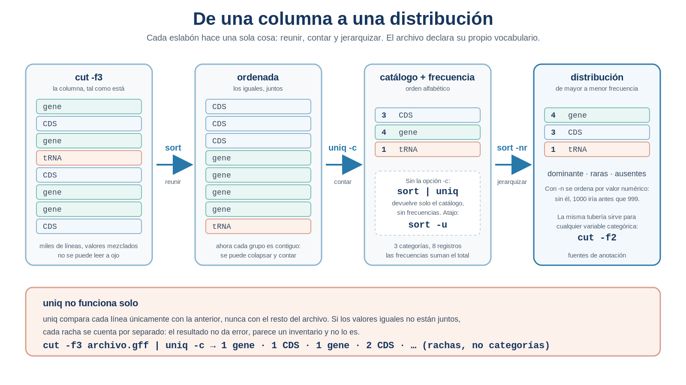

S13 — Resumir y cuantificar: inventario del genoma
Antes de clase leerás las secciones marcadas como indispensables y harás un primer intento: escribir, de memoria, la lista de tipos de elementos que crees que contiene la anotación de tu genoma. Durante el taller dejarás de adivinar: el propio archivo te dirá qué contiene, cuántas veces aparece cada categoría y de qué fuentes proviene. Después integrarás en doc/protocolo.md el inventario completo del genoma, que cierra el primer bloque de la investigación. El primer intento es formativo: importa qué esperabas encontrar y qué se te escapó.
Ficha del módulo
| Elemento | Descripción |
|---|---|
| Sesión | S13, 2 horas |
| Unidad | U4. Procesamiento y exploración de datos genómicos |
| Competencia principal | D. Análisis y exploración de datos genómicos |
| Competencias integradas | A. Documentación reproducible; B. Entorno Unix; C. Manejo de datos biológicos |
| Propósito | Pasar del conteo puntual al inventario exhaustivo: obtener el catálogo completo de las categorías presentes en la anotación y su frecuencia, sin conocerlas de antemano |
| Consulta previa del Plan | Material clásico L6-filtros y L7-filtros; este módulo los sustituye como lectura autocontenida |
| Lectura indispensable | Secciones 1–9 de este módulo (~45 min) |
| Lectura de consulta | Buffalo (2015), Cap. 7; manuales de sort y uniq; ProfeUnix Bioinfo |
| Primer intento | Práctica 1: predecir el catálogo de categorías, 20–25 min, sin abrir archivos |
| Evidencia | Estado 1 del genoma: inventario de tipos de feature con frecuencias, inventario de fuentes de anotación, número de replicones establecido por tres caminos con su independencia valorada, y los límites de cada afirmación |
| Tarea numerada | Ninguna nueva. La evidencia de esta sesión cierra el material que se evalúa en S16 y S17 |
Relación con lo que ya sabes
S12 S13
Decidir qué información entra → Describir todo lo que hay
"cuento lo que se me ocurre" "el archivo declara lo que contiene"En S12 obtuviste tus primeros números defendibles, pero para conseguirlos tuviste que saber por adelantado qué buscar. Escribiste gene, CDS, origin. Los dos primeros existían; el tercero quizá no, y ese cero no significaba nada.
Hoy inviertes la dirección de la pregunta. En lugar de llevarle al archivo una lista de candidatos, le pides que te entregue la suya.
| Habilidad que ya tienes | Dónde la aprendiste | Qué cambia en S13 |
|---|---|---|
Extraer una columna con cut |
S11 | La columna deja de ser un paso intermedio: se convierte en la variable que vas a describir |
Filtrar líneas con grep / grep -v |
S12 | Filtras para limpiar, no para seleccionar: hoy quieres verlo todo |
Contar con wc -l y grep -c |
S10, S12 | Cuentas cada categoría a la vez, no una por una |
| Encadenar tuberías y verificarlas eslabón por eslabón | S10 | Las tuberías de hoy tienen cuatro eslabones y cada uno transforma el conjunto entero |
| Auditar un conteo y cuantificar su error | S12 | Hoy auditas algo distinto: si tu inventario está completo |
| Sostener una respuesta con tres evidencias | S11, Práctica 4 | Esa respuesta provisional se cierra hoy, y las tres evidencias se comparan una a una |
Lo nuevo de hoy es un cambio de tipo de pregunta. Hasta ahora preguntabas “¿cuántos hay de esto?”, y la respuesta era un número. Hoy preguntas “¿qué hay, y en qué proporciones?”, y la respuesta es una distribución: la descripción completa de una variable.
Dónde estás en la investigación
| Pregunta de la investigación | En S13 |
|---|---|
| ¿Cómo está organizado por dentro un archivo biológico? | ✔ Resuelta en S10–S11 |
| ¿Qué información codifica cada campo de la anotación? | ✔ Resuelta en S11 |
| ¿De qué tamaño es el genoma? | ✔ Cuarta respuesta hoy: contraste con la longitud declarada en el GFF3 (se cierra en S22) |
| ¿Qué tipos de features contiene la anotación? | ✔ Se resuelve hoy |
| ¿Cuántos tipos distintos existen? | ✔ Se resuelve hoy |
| ¿Cuántos registros hay de cada tipo? | ✔ Se resuelve hoy (se refinará en S18 y S22) |
| ¿Cuáles son las fuentes de anotación y en qué proporción? | ✔ Se resuelve hoy (se contrastará con otra fuente en S21) |
| ¿Cuántos cromosomas o replicones tiene? | ✔ Se resuelve hoy, con validación por tres caminos |
| ¿Cuántos genes existen? | ◐ Número de S12 revisado dentro del inventario; se refina en S18 |
| ¿Cuántos genes existen por cadena? | ☐ S18 y S22 |
| ¿Cómo organizar la información para responder nuevas preguntas? | ☐ S20–S23 |
Esta es la sesión con más casillas cerradas de todo el bloque. Al terminar habrás establecido el Estado 1 del genoma: lo que puedes afirmar sobre él con la evidencia y las herramientas de las cuatro primeras sesiones.
Resultados de aprendizaje
Al finalizar la sesión podrás:
- Distinguir una pregunta de búsqueda (“¿cuántos hay de esto?”) de una pregunta descriptiva (“¿qué hay y en qué proporciones?”).
- Obtener el catálogo completo de valores distintos de una columna, sin conocerlos de antemano.
- Explicar por qué agrupar exige ordenar primero, y demostrarlo con un contraejemplo propio.
- Construir la distribución de frecuencias de una variable categórica y ordenarla por frecuencia.
- Leer esa distribución: categoría dominante, categorías raras, categorías ausentes, proporciones.
- Distinguir un conteo de registros de un conteo de objetos biológicos, y aplicar la distinción a tus propios números de S12.
- Establecer el número de replicones por tres caminos, valorar el grado de independencia de cada uno y argumentar qué significa que coincidan o que no coincidan.
- Formular predicciones antes de ejecutar y analizar por qué acertaron o fallaron.
- Delimitar, para cada resultado, qué autoriza a afirmar y qué no.
- Documentar el inventario del genoma como Estado 1 de la investigación, con su interpretación biológica, sus limitaciones y lo que queda pendiente de verificar.
Lista de verificación previa
Antes de comenzar confirma:
Ruta de S13
| Momento | Actividad | Producto | Tiempo estimado |
|---|---|---|---|
| Antes de clase | Leer secciones 1–9 | Notas y dudas | 40–50 min |
| Antes de clase | Práctica 1: predecir el catálogo | Lista razonada de categorías esperadas | 20–25 min |
| Taller | Retomar S12 y contrastar predicciones | Punto de partida compartido | 10 min |
| Taller | Práctica 2: ¿qué categorías existen? | Catálogo de tipos en results/s13/ |
20 min |
| Taller | Práctica 3: ¿cuántas veces aparece cada una? | Tabla de frecuencias | 20 min |
| Taller ° | Práctica 4: ¿qué dice esa distribución? | Interpretación biológica escrita | 15 min |
| Taller ° | Práctica 5: ¿quién produjo esta anotación? | Inventario de fuentes | 15 min |
| Taller | Práctica 6: ¿cuántos replicones hay realmente? | Tres evidencias ponderadas | 25 min |
| Taller | Práctica 7: cerrar el Estado 1 | Inventario completo del genoma | 15 min |
| Después | Completar el protocolo | Sección Inventario del genoma | 45–60 min |
° Prácticas 4 y 5: se ejecutan en el taller, pero su parte escrita —interpretación, comparación con el caso eucarionte, clasificación de fuentes— puede terminarse después. Las Prácticas 6 y 7 son irremplazables en el aula: la primera exige discutir a qué evidencia creerle, y la segunda, contrastar tu genoma con el de un compañero. Ninguna de las dos funciona en solitario.
1. La limitación que dejó S12 [Indispensable]
Al terminar S12 tenías números defendibles y un problema del que quizá no habías medido el tamaño.
Míralo en el orden en que ocurrió. Para contar genes escribiste gene. Para contar regiones codificantes escribiste CDS. Para el origen de replicación escribiste origin… y ahí se rompió algo, porque esa palabra la pusiste tú, no el archivo.
Para contar un tipo, primero tienes que saber que existe.
Y solo puedes preguntar por los tipos que se te ocurren.La consecuencia es incómoda: tu conocimiento del genoma está limitado por tu imaginación, no por los datos. Si tu archivo anota tRNA, rRNA, secuencias de inserción, regiones reguladoras o cualquier otra categoría que no se te ocurrió nombrar, esas categorías no aparecen en tu análisis y nada te avisa de que faltan.
Es un error nuevo, distinto de los de S12. El falso positivo mete de más y se puede detectar mirando las líneas seleccionadas. El falso negativo saca de más y suele delatarse en el número. Esto otro no mete ni saca: no existe. Es una categoría entera del genoma sobre la que nunca preguntaste, y por lo tanto sobre la que nunca obtuviste ni un número correcto ni uno incorrecto.
Un análisis puede estar completamente libre de falsos positivos y aun así ser incompleto. Auditar un conteo responde “¿este número es correcto?”. Hoy respondes una pregunta anterior y más importante: “¿estoy mirando todo lo que hay?”
2. Darle la vuelta a la pregunta [Indispensable]
2.1 Buscar algo frente a describir una variable
Las dos preguntas de esta sesión parecen la misma y no lo son:
| Pregunta de búsqueda | Pregunta descriptiva | |
|---|---|---|
| Formulación | ¿Cuántos hay de esto? | ¿Qué hay, y en qué proporciones? |
| Qué aportas tú | El valor que te interesa | Solo la columna |
| Qué aporta el archivo | Un número | El catálogo completo y los números |
| Riesgo característico | Preguntar por lo que no existe | Ninguno: no puedes omitir lo que no nombraste |
| Resultado | Un dato | Una distribución |
| Sesión | S12 | S13 |
En la segunda columna eres tú quien pone el vocabulario. En la tercera, el vocabulario sale del archivo. Ese es todo el cambio conceptual de la sesión, y es más profundo de lo que parece: pasas de comprobar hipótesis sobre el contenido a describirlo.
Para describir una variable categórica —una columna cuyos valores son etiquetas, no cantidades— necesitas exactamente dos cosas:
- la lista de sus valores distintos (el catálogo, o vocabulario, de la variable);
- cuántas veces aparece cada uno (la frecuencia).
Con esas dos cosas tienes la descripción completa. Y ninguna de las dos requiere que sepas nada de antemano.
Un investigador no solo comprueba lo que sospecha. También diseña estrategias para descubrir aquello que no sabía que debía preguntar. Las dos actividades son necesarias y no son intercambiables: la primera pone a prueba tus ideas, la segunda las amplía. Hoy haces la segunda por primera vez en el curso, y la harás con una operación sorprendentemente sencilla: en lugar de llevarle preguntas al archivo, le pides que te diga de qué está hecho.
2.2 El obstáculo: los valores distintos están mezclados
Ya sabes obtener la columna. Si haces esto sobre el archivo sin directivas que guardaste en S12:
cut -f3 results/s12/anotaciones-sin-directivas.gff | head -n 12verás algo parecido a:
region
gene
CDS
gene
CDS
gene
gene
CDS
tRNA
gene
CDS
...Están todos los valores, pero mezclados y repetidos miles de veces. Para saber cuáles son distintos tendrías que recorrer el archivo entero recordando lo ya visto. Es exactamente el tipo de tarea que no puedes hacer a ojo y que sí puedes hacer en dos pasos:
1. Reunir los valores iguales, poniéndolos juntos → ordenar
2. Colapsar cada grupo en una sola línea → deduplicarEse es el orden natural, y también el orden de las dos herramientas de hoy.
2.3 Las herramientas
Las cuatro cajas que siguen no son cuatro comandos que memorizar: son los cuatro pasos del razonamiento que acabas de deducir, cada uno con la herramienta que lo ejecuta.
reunir → catalogar → agrupar → contar
sort sort -u uniq uniq -cSi en algún momento olvidas la sintaxis, la puedes consultar. Lo que no se consulta es saber qué paso del razonamiento necesitas.
Sintaxis mínima — sort · reunir
sort archivo.txt¿Qué hace? Ordena las líneas alfabéticamente. Su efecto secundario es el que te interesa hoy: deja juntas todas las líneas iguales.
¿Por qué aparece en esta sesión? Porque para agrupar hay que reunir, y para reunir hay que ordenar. Sin este paso no existe ninguna de las dos operaciones siguientes.
Sintaxis mínima — sort -u · catalogar
sort -u archivo.txt¿Qué hace? Ordena y deja una sola aparición de cada valor distinto: devuelve el catálogo.
¿Por qué aparece en esta sesión? Porque es la respuesta directa a “¿qué categorías contiene esta columna?”, que es la pregunta con la que S12 se quedó sin recursos.
Sintaxis mínima — uniq · agrupar
sort archivo.txt | uniq¿Qué hace? Colapsa en una sola línea las repeticiones consecutivas. Nota la palabra consecutivas: uniq solo compara cada línea con la anterior.
¿Por qué aparece en esta sesión? Porque es la operación de agrupar, y porque su opción -c —la siguiente— es la que convierte un catálogo en una distribución.
Sintaxis mínima — uniq -c · contar
sort archivo.txt | uniq -c¿Qué hace? Colapsa las repeticiones consecutivas y antepone a cada valor el número de veces que aparecía.
¿Por qué aparece en esta sesión? Porque responde de una vez la pregunta que en S12 exigía un grep -c por cada tipo: cuenta todas las categorías, incluidas las que no sabías que existían.
uniq no funciona solo
uniq compara cada línea con la inmediatamente anterior, nunca con el resto del archivo. Si los valores iguales no están juntos, los cuenta como grupos separados: gene aparecerá muchas veces en tu “catálogo”, cada una con su cuenta parcial. El resultado no da error y parece razonable. uniq siempre va precedido de sort. Lo comprobarás tú mismo en la Práctica 3.

Figura 1. De una columna desordenada a una distribución de frecuencias. Cada eslabón hace una sola cosa: reunir, colapsar, contar y jerarquizar. Elaboración propia.
🤖 Prompt para ProfeUnix Bioinfo: > Explícame la diferencia entre sort -u y sort | uniq sobre un archivo de texto. ¿Hay algún caso > en que den resultados distintos? Muéstrame también qué pasa si uso uniq sin ordenar antes.
Práctica 1 — ¿Qué esperas que contenga la anotación? (antes de clase, primer intento)
Pregunta biológica. ¿Qué tipos de elementos crees que están anotados en el genoma de tu organismo, y cuál esperas que sea el más frecuente?
Objetivo. Comprometerte con un catálogo antes de que el archivo te dé el suyo. La distancia entre las dos listas es la medida exacta de lo que hoy vas a aprender.
Antes de clase (primer intento). En doc/s13-primer-intento.md:
Enumera. Escribe todos los tipos de elementos que crees que puede contener la anotación de tu genoma. Piensa como biólogo, no como usuario de Unix: ¿qué cosas hay en un genoma que alguien querría marcar sobre una coordenada? No consultes el archivo ni internet.
Ordena tu predicción. Ordena tu lista de más a menos frecuente, según lo que esperas. Escribe al lado de las tres primeras por qué crees que serán las más abundantes.
Estima una proporción. Del total de registros de anotación que contaste en S12, ¿qué porcentaje crees que corresponde al tipo más frecuente? Da un número, aunque sea aproximado.
Anticipa lo desconocido. Escribe esta frase y complétala: “Es probable que el archivo contenga categorías que no he escrito, por ejemplo…”. Nombra al menos una y explica por qué se te podría haber escapado.
Recupera tu duda de S12. ¿Con qué palabra buscaste el origen de replicación? ¿Sigues creyendo que es la que usa tu archivo? Escribe tu apuesta.
Durante el taller. Compararás tu lista con el catálogo real: cuántas categorías acertaste, cuántas te sobraron, cuántas ni siquiera imaginaste. Y comprobarás por fin si la palabra que usaste en S12 estaba en el vocabulario del archivo.
Después del taller. La comparación entre tu predicción y el catálogo real se integra al protocolo (Sección 9).
Criterio de logro: presentas una lista razonada y ordenada, justificas tus tres primeras categorías con argumentos biológicos y reconoces explícitamente que tu lista puede ser incompleta.
3. Del catálogo a la distribución [Indispensable]
El catálogo te dice qué hay. No te dice cuánto pesa cada cosa, y sin eso no hay interpretación posible: una anotación con 4 000 genes y 3 tRNA no se parece en nada a una con 4 000 genes y 900 tRNA, aunque su catálogo sea idéntico.
Añadiendo uniq -c a la tubería, cada categoría llega acompañada de su frecuencia:
cut -f3 results/s12/anotaciones-sin-directivas.gff | sort | uniq -cLa salida viene ordenada alfabéticamente, porque ese fue el criterio de sort. Para leerla como lo que es —una jerarquía— conviene reordenarla por el número, de mayor a menor. Y ese número es ahora la primera cosa de cada línea:
Sintaxis mínima — sort -n y sort -r
sort -n archivo.txt
sort -nr archivo.txt¿Qué hace? -n ordena por valor numérico en lugar de alfabéticamente; -r invierte el orden. Combinados, -nr ordena de mayor a menor.
¿Por qué aparece en esta sesión? Porque la salida de uniq -c empieza por un número, y sin -n se ordenaría como texto: 1000 quedaría antes que 999, igual que “casa” va antes que “perro”.
Sintaxis mínima — sort -k
sort -k2 archivo.txt¿Qué hace? Ordena usando como criterio un campo concreto de la línea, no la línea entera. Aquí, el segundo campo. Los campos se separan por espacios en blanco, salvo que se indique otro delimitador.
¿Por qué aparece en esta sesión? Porque hoy trabajas con líneas que tienen más de un campo y el criterio de ordenamiento no siempre es el primero. La salida de uniq -c tiene dos campos —frecuencia y categoría—: ordenarla por el segundo produce la tabla alfabética, que es la que se puede comparar entre archivos. Y las directivas ##sequence-region tienen cuatro: el nombre del replicón en el segundo y su longitud en el cuarto. Ordenar por ese cuarto campo, y numéricamente, es lo que te muestra de un vistazo cuál es el cromosoma y cuáles los replicones pequeños (Práctica 6).
Sin -k, sort compara la línea completa empezando por el primer carácter. Sobre una tabla de dos o más columnas eso ordena por la columna equivocada y el resultado no da ninguna señal de error: simplemente está ordenado por otra cosa. Antes de ordenar, pregúntate siempre cuál es el campo que decide.
Con eso, la tubería completa de la sesión queda así:
cut -f3 results/s12/anotaciones-sin-directivas.gff | sort | uniq -c | sort -nrLéela como una frase: quédate con la columna del tipo, agrupa los valores iguales, cuenta cada grupo y ordena los grupos de mayor a menor.
Cuatro eslabones son muchos para verificar de una vez. Constrúyela como en S10: ejecuta el primero y mira su salida con head; añade el segundo y vuelve a mirar; y así hasta el final. Si te saltas ese hábito, el día que la tubería devuelva algo raro no sabrás en qué eslabón se torció.
Práctica 2 — ¿Qué categorías existen realmente? (durante el taller)
Pregunta biológica. ¿Qué tipos de elementos están anotados en este genoma, y cuántos tipos distintos hay?
Objetivo. Obtener del archivo su propio vocabulario y contrastarlo con el que tú imaginaste.
Pasos.
Prepara. Crea el directorio de la sesión:
mkdir -p results/s13Ten a la vista tu predicción. Abre
doc/s13-primer-intento.md. No lo modifiques todavía.Pide el catálogo.
cut -f3 results/s12/anotaciones-sin-directivas.gff | sort -uLéelo entero, sin prisa. Es la primera vez en el curso que el archivo te dice qué contiene en lugar de responder a lo que le preguntaste.
Cuenta las categorías.
cut -f3 results/s12/anotaciones-sin-directivas.gff | sort -u | wc -lRevisa el catálogo con ojo crítico. ¿Todas las líneas que aparecen son tipos de feature legítimos? Mira con atención las primeras y las últimas.
Ver retroalimentación
Es muy probable que en tu catálogo aparezcan una o dos entradas que no son tipos de feature: líneas largas y con aspecto de encabezado, del estilo #!processor NCBI annotwriter o #!genome-build-accession ….
Son las mismas líneas que sobrevivieron a tu filtro en S12, porque llevan un solo #. Al aplicarles cut -f3 ocurre algo que conviene entender: esas líneas no tienen tabuladores, así que cut no encuentra una tercera columna y devuelve la línea completa. El residuo de S12 acaba de reaparecer, esta vez disfrazado de categoría del genoma.
Es una buena noticia disfrazada de estorbo. Tu inventario delata un problema que el conteo de S12 solo insinuaba: cuando describes una variable completa, cualquier basura que quede en el flujo se hace visible. Un conteo puntual la habría escondido.
Puedes quitarla hoy encadenando | grep -v "#!", y así lo harás. Pero fíjate otra vez en lo que estás haciendo: apilar filtros porque todavía no puedes escribir de una vez “las líneas que empiezan por almohadilla”. La deuda con S18 crece.
Limpia y guarda el catálogo definitivo.
cut -f3 results/s12/anotaciones-sin-directivas.gff | grep -v "#!" | sort -u > results/s13/catalogo-tipos.txt cat results/s13/catalogo-tipos.txtCompara con tu predicción. Completa esta tabla en tu bitácora:
Categorías que predije y existen: .... Categorías que predije y NO existen: .... Categorías que existen y NO predije: .... Total de tipos distintos en el archivo: ....Cierra la duda de S12. Busca en el catálogo el origen de replicación. ¿Aparece? ¿Con qué nombre exacto? Compáralo con la palabra que usaste en S12.
Esto es lo importante, y merece que te detengas: en S12 tu búsqueda falló y no hubo ninguna señal de error. Obtuviste un número —quizá un cero, quizá cientos— perfectamente formado y completamente ajeno a tu pregunta. Hoy el archivo te ha dicho el nombre verdadero, y solo por eso sabes que aquello falló.
Escribe la respuesta a esta pregunta, que vale para todo lo que hagas de aquí en adelante: ¿qué otro resultado de tu protocolo podría estar fallando exactamente de este modo, sin que nada te lo indique?
Producto. results/s13/catalogo-tipos.txt, el número de tipos distintos y la tabla de comparación con tu predicción.
Interpretación. Responde en dos o tres frases: de las categorías que no habías imaginado, ¿cuál te sorprende más y por qué? ¿Alguna de ellas cambia lo que creías saber sobre este genoma?
Qué puedo y qué no puedo afirmar. Completa las dos frases en tu bitácora:
- Puedo afirmar que la anotación de este genoma contiene exactamente estas N categorías, porque…
- Todavía no puedo afirmar nada sobre cuánto pesa cada una, porque…
Criterio de logro: obtienes el catálogo completo, detectas por ti mismo la entrada que no es un tipo de feature y explicas su origen, comparas la lista real con tu predicción en las tres direcciones (acertadas, sobrantes, faltantes) y delimitas por escrito el alcance del resultado.
Práctica 3 — ¿Cuántas veces aparece cada categoría? (durante el taller)
Pregunta biológica. ¿Cómo se reparten los registros de anotación entre los tipos de feature de este genoma?
Objetivo. Construir la distribución de frecuencias completa y comprobar en carne propia por qué agrupar exige ordenar.
Pasos.
Haz el contraejemplo primero. Antes de la tubería correcta, ejecuta la incorrecta:
cut -f3 results/s12/anotaciones-sin-directivas.gff | uniq -c | head -n 20Mira la salida con calma. ¿Cuántas veces aparece la categoría más frecuente en esa lista? ¿Qué tamaño tienen las cuentas? Escribe en una frase qué crees que hizo
uniqaquí.
Ver retroalimentación
Verás la misma categoría repetida muchísimas veces, cada una con una cuenta pequeña: 1 gene, 1 CDS, 2 exon, 1 gene, … El resultado no es un inventario, es una lista de rachas: cada vez que un valor aparece seguido de sí mismo, uniq lo colapsa; en cuanto cambia, empieza un grupo nuevo.
Y aquí está lo importante: no hay ningún error. uniq hizo exactamente lo que hace —comparar cada línea con la anterior— y devolvió una salida perfectamente formada. Si no supieras qué esperar, podrías interpretar esa lista como un inventario legítimo con muchas categorías pequeñas.
Es el mismo tipo de fallo que el falso positivo de S12: silencioso, plausible y detectable solo si entiendes lo que la herramienta hace realmente. Por eso el contraejemplo va antes que la tubería correcta.
Un detalle que merece la pena notar: en un GFF3 esta salida no es del todo inútil. Las rachas reflejan el orden en que el archivo enumera los elementos —gen, luego su CDS, luego su exón— y por eso ves grupos pequeños que se repiten. Estás viendo la estructura jerárquica de la anotación, no un conteo.
Ahora la tubería correcta.
cut -f3 results/s12/anotaciones-sin-directivas.gff | grep -v "#!" | sort | uniq -c | head -n 20¿En qué orden salen las categorías? ¿Es el orden que necesitas para leer la tabla?
Ordena por frecuencia y guarda.
cut -f3 results/s12/anotaciones-sin-directivas.gff | grep -v "#!" | sort | uniq -c | sort -nr > results/s13/inventario-tipos.txt cat results/s13/inventario-tipos.txtComprueba que la suma cuadra. Un inventario completo debe sumar exactamente el total de registros de anotación que contaste en S12. Suma a mano las frecuencias —son pocas líneas— y compara con:
cut -f3 results/s12/anotaciones-sin-directivas.gff | grep -v "#!" | wc -lSi no cuadra, no sigas: hay líneas entrando o saliendo del flujo sin que lo sepas.
Cambia el criterio de ordenamiento. La misma tabla admite dos lecturas distintas según por qué campo la ordenes. Primero, el orden ingenuo —sin indicar campo—:
sort results/s13/inventario-tipos.txtMira el resultado:
sortcompara la línea entera desde el primer carácter, y el primer carácter es la frecuencia. ¿Quedó ordenada por número o por texto? ¿Dónde acabó la categoría con más registros?Ahora indica explícitamente el campo que debe decidir:
sort -k2 results/s13/inventario-tipos.txtEscribe una frase por cada orden: ¿para qué sirve la tabla ordenada por frecuencia y para qué la ordenada por nombre de categoría? Pista para la segunda: piensa en qué orden necesitas tener las dos tablas si quieres compararlas línea a línea con las de un compañero, o con las que tú mismo generarás en S18 sobre este mismo archivo.
Vuelve sobre S12. Localiza en tu inventario las filas de
geneyCDS. Compáralas con la tabla de la diferencia de S12:Tipo Conteo bruto S12 Conteo corregido S12 Frecuencia en el inventario S13 ¿Coinciden? geneCDSSi el valor de hoy coincide con tu conteo corregido de S12, acabas de validar aquel resultado por un camino distinto. Si no coincide, tienes una discrepancia que investigar: anótala y busca la causa antes de seguir.
Producto. results/s13/inventario-tipos.txt, la comprobación de la suma y la tabla de comparación con S12.
Interpretación. ¿Cuántos tipos distintos tiene tu genoma anotado? ¿La categoría más frecuente es la que predijiste? Escribe la proporción del tipo dominante sobre el total de registros, en porcentaje.
Qué puedo y qué no puedo afirmar.
- Puedo afirmar que el archivo contiene N registros de cada tipo, porque…
- Todavía no puedo afirmar que el organismo tenga N objetos de cada tipo, porque…
La pregunta que se lleva a casa. Recorre tu tabla y localiza una categoría cuya frecuencia no sabes explicar: demasiado alta, demasiado baja, o simplemente inesperada. Escríbela con su número. No la resuelvas hoy. Es tu pregunta abierta de la sesión, y va al apartado Nuevas preguntas que abre del protocolo.
Criterio de logro: produces la distribución completa ordenada por frecuencia, demuestras con tu propio contraejemplo por qué uniq necesita sort, verificas que las frecuencias suman el total de registros y formulas al menos una pregunta abierta a partir de la tabla.
4. Leer una distribución [Indispensable]
Tienes una tabla de frecuencias. Una tabla no es una conclusión: hay que leerla, y leerla tiene reglas. No hacen falta estadísticos ni fórmulas; hacen falta cuatro preguntas y honestidad biológica.
4.1 Las cuatro preguntas
¿Cuál domina? La categoría más frecuente marca el carácter de la anotación. Si domina CDS, estás ante una anotación centrada en el contenido codificante. Si domina exon, ante una anotación que descompone cada gen en sus partes. Si domina gene, ante una anotación compacta, típica de procariontes.
¿Cuáles son raras? Las categorías con frecuencias muy bajas —una, dos, cinco apariciones— casi siempre corresponden a elementos estructuralmente únicos (origen de replicación, región telomérica) o a elementos poco representados (un tRNA concreto, un RNA no codificante particular). Una frecuencia baja no significa poco importante: el origen de replicación aparece una vez y sin él no hay replicación.
¿Cuáles faltan? Esta es la pregunta que casi nadie hace, y la más informativa. Compara el catálogo con lo que esperabas de la biología del organismo. Si es una bacteria y no hay tRNA, algo pasa: o la anotación es parcial, o el archivo que descargaste no es el que crees. La ausencia de una categoría es un dato sobre el archivo, no necesariamente sobre el organismo.
¿En qué proporción? Un número absoluto no se puede comparar entre genomas; una proporción sí. Divide la frecuencia de cada categoría entre el total de registros y exprésalo en porcentaje. Con eso puedes decir frases como “el 41 % de los registros son CDS”, que sí significan algo fuera de tu archivo.
Esto es análisis descriptivo, y es todo lo que necesitas por ahora: describir cómo se reparte una variable. No hay pruebas de hipótesis, ni intervalos, ni significancia. Lo que sí hay —y hay que cuidarlo— es la interpretación: qué dice ese reparto sobre el organismo y sobre quien anotó su genoma.
4.2 La advertencia que gobierna toda la sesión
Tu inventario cuenta líneas de un archivo, no cosas del organismo. Las dos cantidades se parecen lo bastante como para confundirlas y difieren lo bastante como para arruinar una conclusión.
- Un mismo gen genera varios registros: uno de tipo
gene, uno o varios de tipoCDS, a vecesexon,mRNAostart_codon. Sumarlos sería contar el mismo objeto muchas veces. - En organismos con genes interrumpidos, una sola proteína puede producir varios registros
CDS, uno por fragmento codificante. El número deCDSno es entonces el número de proteínas. - Los registros de tipo
regiondescriben el replicón completo, no un elemento dentro de él. geneincluye pseudogenes, que no son genes funcionales (lo comprobaste en S12).
Regla práctica: escribe siempre “el archivo contiene N registros de tipo X”. Solo cuando puedas justificar la equivalencia —por ejemplo, tras comprobar que en tu genoma hay un CDS por gen— podrás escribir “el organismo tiene N genes”. Esa justificación es parte de la evidencia, no un detalle de redacción.
Dos bases de datos pueden publicar cifras distintas de “genes” para el mismo organismo sin que ninguna esté equivocada: cada una decide de forma distinta qué registros cuentan como un gen. Cuando en S21 compares tu inventario con el de otra fuente, esa será la primera explicación que tendrás que descartar antes de buscar un error propio.
Práctica 4 — ¿Qué nos dice esta distribución sobre el genoma? (durante el taller)
Pregunta biológica. ¿Qué revela el perfil de anotación sobre este organismo y sobre quienes anotaron su genoma?
Objetivo. Convertir una tabla de frecuencias en afirmaciones biológicas defendibles, y marcar con precisión dónde termina lo que la evidencia permite afirmar.
Pasos.
Calcula proporciones. Toma tu
results/s13/inventario-tipos.txty añade una columna de porcentaje sobre el total de registros. Hazlo con calculadora: son pocas filas y el cálculo automático llega en S22.Tipo de feature Frecuencia % del total Interpretación en una frase Nombra la dominante. ¿Cuál es y qué porcentaje ocupa? ¿Qué tipo de anotación sugiere eso?
Nombra las raras. Lista las categorías con menos de cinco apariciones. Para cada una, responde: ¿es rara porque el elemento es único en el genoma, o porque la anotación es incompleta? Si no puedes decidirlo, escríbelo así: “no determinable con la evidencia actual”.
Busca las ausentes. Vuelve a tu predicción de la Práctica 1. ¿Qué categorías esperabas y no están? Para cada una, escribe la explicación más probable entre estas tres: (a) el organismo no tiene ese elemento; (b) lo tiene pero esta anotación no lo incluye; (c) está, pero con otro nombre.
Y para cada una, una pregunta más: ¿qué información adicional necesitarías para decidir entre las tres? No la busques hoy; nómbrala. Saber qué dato falta es tan parte del análisis como tener el dato.
La pregunta más interesante de la tabla: ¿cuántas CDS por gen?
Hasta aquí has leído las categorías una por una. La lectura que de verdad dice algo del organismo aparece cuando relacionas dos de ellas: cada gen que se traduce debería aportar al menos un registro CDS, así que el cociente entre ambas frecuencias es una afirmación biológica encubierta.
Predice antes de dividir. Sin mirar la tabla: ¿esperas más registros
CDSquegene, menos, o aproximadamente los mismos? Escribe tu predicción y el razonamiento biológico que la sostiene.Calcula el cociente. Divide el número de registros
CDSentre el número de registrosgene. ¿Coincide con tu predicción? ¿Es cercano a 1, mayor o menor?Explica la desviación. Si el cociente no es exactamente 1, tu inventario contiene la explicación. Búscala en las demás filas de la tabla antes de leer la retroalimentación: ¿qué categorías podrían estar sumando a un lado del cociente y no al otro?
Ver retroalimentación
En una bacteria típica el cociente CDS/gene suele quedar algo por debajo de 1. La razón es biológica y se lee directamente en tu inventario: entre los registros gene hay pseudogenes y hay genes de RNA —tRNA, rRNA, ncRNA— que no se traducen y por lo tanto no generan ningún CDS. Cada uno de ellos suma un gene sin sumar un CDS.
Si tu cociente es mucho mayor que 1, la explicación más probable es que los genes de tu organismo estén interrumpidos y cada uno produzca varios registros CDS. Es lo esperable en un eucarionte y casi nunca en una bacteria: si te ocurre con una bacteria, revisa primero de qué archivo se trata.
Y si es exactamente 1, no lo des por bueno sin mirar: comprueba que no estés comparando el conteo bruto de uno con el corregido del otro.
Fíjate en lo que acabas de hacer. Has usado dos números de tu propia tabla para plantear una hipótesis sobre la biología del organismo, y la has puesto a prueba contra lo esperable para su grupo. Eso ya no es contar: es interpretar.
Cambia de organismo, sin cambiar de archivo. Imagina que este mismo análisis se hiciera sobre un genoma eucarionte. Responde sin ejecutar nada, razonando desde la estructura de los genes:
- ¿Qué categorías aparecerían que en tu tabla no están?
- ¿Seguiría dominando la misma? Si no, ¿cuál pasaría a dominar y por qué?
- ¿En qué dirección se movería el cociente CDS/gene?
Este ejercicio no es un adorno: te obliga a explicar tu distribución por sus causas biológicas, no por sus números. Una distribución que no sabes cómo cambiaría en otro organismo es una distribución que en realidad no has interpretado.
Escribe el párrafo. Con todo lo anterior, redacta cinco o seis líneas que describan el perfil de anotación de tu genoma, dirigidas a alguien que no ha visto el archivo. Usa proporciones, no solo números absolutos.
Marca el límite. Termina el párrafo con una frase que empiece por “Estos números describen registros del archivo, no objetos biológicos, porque…”.
Producto. Tabla de proporciones, interpretación escrita del perfil de anotación y comparación razonada con un genoma eucarionte.
Qué puedo y qué no puedo afirmar.
- Puedo afirmar que el perfil de anotación de este genoma es…, porque…
- Todavía no puedo afirmar que ese perfil describa al organismo y no a quien lo anotó, porque…
Interpretación. La pregunta de fondo: si mañana descargas la anotación del mismo genoma desde otro recurso, ¿esperarías exactamente estas mismas frecuencias? ¿Por qué? (La comprobarás en S21.)
Criterio de logro: interpretas la distribución con proporciones, distingues categorías raras de categorías ausentes, predices y explicas el cociente CDS/gene a partir de tu propia tabla, razonas cómo cambiaría el perfil en otro tipo de organismo y declaras explícitamente que cuentas registros.
5. Quién produjo esta anotación [Indispensable]
La columna 2 del GFF3 —la que en S11 llamaste source— responde una pregunta distinta de todas las anteriores: no qué hay en el genoma, sino quién dice que está ahí.
Es una columna de procedencia, y por eso enlaza directamente con la Unidad 3. Allí documentaste de dónde venía el archivo completo; aquí descubres que dentro del archivo puede haber anotaciones de varios orígenes, cada una con su método y su fiabilidad.
Valores típicos: RefSeq, Genbank, Protein Homology, GeneMarkS-2+, cmsearch, tRNAscan-SE. Algunos nombran una base de datos; otros, un programa predictor. La diferencia importa: una anotación producida por homología con proteínas conocidas y otra producida por un modelo estadístico ab initio no tienen la misma clase de respaldo.
La operación es exactamente la misma de la sección anterior, cambiando la columna:
cut -f2 results/s12/anotaciones-sin-directivas.gff | grep -v "#!" | sort | uniq -c | sort -nrQue la tubería sea idéntica salvo por el número de columna no es casualidad: acabas de aprender un patrón de análisis, no un comando. Sirve para cualquier variable categórica de cualquier tabla —la cadena, el marco de lectura, o una columna de un archivo clínico—. En S21 la aplicarás a una tabla que todavía no has visto.
Práctica 5 — ¿Quién produjo esta anotación? (durante el taller)
Pregunta biológica. ¿De qué fuentes proviene la anotación de este genoma y qué proporción aporta cada una?
Objetivo. Inventariar las fuentes y valorar qué respaldo tiene la evidencia con la que llevas tres sesiones trabajando.
Pasos.
Predice, antes de ejecutar nada. Escribe tus respuestas en la bitácora:
- ¿Cuántas fuentes distintas esperas encontrar?
- ¿Crees que una sola entidad anotó todo el genoma, o que intervinieron varias?
- ¿Esperas nombres de bases de datos, nombres de programas, o nombres de personas?
- Si hubiera varias, ¿esperas que se repartan el trabajo por igual o que una domine?
Esta predicción importa más de lo que parece: llevas tres sesiones tratando la anotación como si fuera un solo bloque de evidencia. Estás a punto de comprobar si lo es.
Inventaría las fuentes.
cut -f2 results/s12/anotaciones-sin-directivas.gff | grep -v "#!" | sort | uniq -c | sort -nr > results/s13/inventario-fuentes.txt cat results/s13/inventario-fuentes.txtContrasta con tu predicción. ¿Una sola fuente o varias? Calcula el porcentaje que aporta cada una. ¿Qué parte de tu predicción falló, y por qué crees que la formulaste así?
Clasifícalas. Para cada fuente, decide si es una base de datos, un programa predictor o no puedes determinarlo. Si el nombre no te dice nada, búscalo: forma parte de documentar tu evidencia.
Cruza fuente y tipo. Elige la fuente menos frecuente y mira qué tipos de feature produce:
grep "<nombre-de-la-fuente>" results/s12/anotaciones-sin-directivas.gff | cut -f3 | sort | uniq -c | sort -nr¿Esa fuente se especializa en un tipo concreto de elemento? ¿Tiene sentido biológico que así sea?
Conecta con U3. Abre tu ficha de procedencia de la Unidad 3. ¿La fuente que documentaste allí coincide con lo que declara la columna 2? Si el archivo lo produjo un pipeline de anotación automática, ¿queda eso reflejado en tu ficha? Si no, añádelo.
Ver retroalimentación
En un archivo de RefSeq lo más común es encontrar una fuente dominante —RefSeq o Genbank— y una o varias minoritarias correspondientes a programas especializados: tRNAscan-SE para los tRNA, cmsearch para RNA estructurales, GeneMarkS-2+ o Protein Homology para las regiones codificantes.
El cruce del paso 4 suele mostrar una especialización nítida: cada predictor aporta exactamente el tipo de elemento para el que fue diseñado. No es un detalle administrativo. Significa que distintas partes de tu inventario tienen distinto tipo de respaldo: unas provienen de similitud con secuencias conocidas y otras de un modelo estadístico, y su fiabilidad no es la misma.
Es la primera vez en el curso que compruebas que la evidencia dentro de un mismo archivo no es homogénea. Anótalo en las limitaciones: cuando en S21 compares con otra fuente, las discrepancias se concentrarán muy probablemente en las categorías anotadas por predicción.
Producto. results/s13/inventario-fuentes.txt con sus porcentajes y la clasificación de cada fuente.
Interpretación. ¿Tu genoma está anotado por una sola vía o por varias? ¿Qué proporción de tu inventario depende de predicción computacional y no de evidencia experimental o de homología? ¿Cómo afecta eso a la confianza en el número de genes que reportaste en S12?
Qué puedo y qué no puedo afirmar.
- Puedo afirmar que esta anotación proviene de N fuentes, con estos pesos relativos, porque…
- Todavía no puedo afirmar que unas sean más fiables que otras, porque… (qué información me faltaría para sostenerlo)
Criterio de logro: predices antes de ejecutar y contrastas, inventarías las fuentes con sus proporciones, distingues bases de datos de programas predictores, relacionas el resultado con la ficha de procedencia de U3 y delimitas qué no autoriza a concluir esta evidencia.
6. Una respuesta sostenida por tres evidencias [Indispensable]
Queda pendiente desde S11 una pregunta que dejaste marcada como provisional: cuántos replicones —cromosomas, plásmidos, contigs— componen tu genoma. Entonces reuniste tres indicios, pero no podías recorrer el archivo completo ni enumerar valores distintos. Ahora sí puedes.
Los tres caminos usan partes distintas de tus datos, producidas en momentos distintos del proceso:
| Camino | Archivo del que sale | Qué mide |
|---|---|---|
| 1. Encabezados del FASTA | FASTA (secuencia) | Cuántas secuencias contiene el ensamblado |
| 2. Columna 1 del GFF3 | GFF3 (cuerpo de datos) | Sobre cuántas secuencias distintas hay anotaciones |
3. Directivas ##sequence-region |
GFF3 (encabezado) | Cuántas secuencias declara el productor del archivo, con su longitud |
grep -c ">" data/source/<tu_archivo>.fna
cut -f1 results/s12/anotaciones-sin-directivas.gff | grep -v "#!" | sort -u | wc -l
grep -c "##sequence-region" data/source/<tu_archivo>.gffObtener la misma cantidad por varios caminos no es redundancia: es validación. Repetir el mismo comando tres veces no aporta nada; llegar al mismo número por vías que podrían haber fallado de formas distintas convierte un resultado en una conclusión. Y si los números no coinciden, has encontrado algo real: una secuencia sin anotar, una anotación que menciona una secuencia ausente del FASTA, o dos archivos de versiones distintas. Eso no es un fracaso del análisis; suele ser su hallazgo más valioso.
6.1 No todas las evidencias son igual de independientes
Fíjate en la segunda columna de la tabla, porque ahí hay una lección que va mucho más allá de esta sesión. Los caminos 2 y 3 salen del mismo archivo: uno del cuerpo del GFF3 y otro de su encabezado, pero ambos los escribió el mismo proceso de anotación, en la misma ejecución. El camino 1 viene de otro archivo, generado en otra etapa: el ensamblado.
Eso significa que las tres evidencias no valen lo mismo:
FASTA ─┐
├── evidencia realmente independiente entre sí
GFF3 (cuerpo) ─┤
GFF3 (encabezado) ─── comparten origen: mismo productor, misma ejecuciónSi el proceso que generó tu GFF3 cometió un error —olvidó un replicón, arrastró un encabezado de una versión anterior—, ese error aparecería idéntico en los caminos 2 y 3, y su coincidencia no probaría nada. Lo único que puede delatarlo es el camino 1.
La independencia de las evidencias tiene grados, y las conclusiones se sostienen en el grado real, no en el número de comprobaciones. Tres comprobaciones que comparten origen valen menos que dos que no lo comparten. Cuando en S21 confrontes tu inventario con otra base de datos, estarás buscando exactamente esto: una evidencia que no dependa de quien produjo la tuya.
Práctica 6 — ¿Cuántos replicones tiene realmente el genoma? (durante el taller)
Pregunta biológica. ¿De cuántas moléculas de DNA está compuesto este genoma, y coinciden todas las evidencias disponibles?
Objetivo. Cerrar una respuesta que lleva dos sesiones provisional, sosteniéndola en tres evidencias independientes, y aprovechar las longitudes declaradas para volver sobre el tamaño del genoma.
Pasos.
Razona antes de ejecutar. Vas a obtener el mismo número por tres vías. Antes de escribir un solo comando, responde en tu bitácora:
- Según tu respuesta provisional de S11, ¿cuántos replicones esperas?
- De las tres evidencias, ¿cuál te parece la más fuerte y por qué?
- Si dos de ellas discreparan, ¿a cuál le creerías? ¿Cambia tu respuesta según qué dos sean las que discrepan?
- ¿Hay algún error que las tres evidencias fallarían en detectar a la vez?
Escríbelo ahora. Después de ver los números será demasiado tarde: ya sabrás la respuesta y tu razonamiento se acomodará a ella sin que lo notes.
Camino 1 — el FASTA. Cuenta y mira los encabezados:
grep -c ">" data/source/<tu_archivo>.fna grep ">" data/source/<tu_archivo>.fna¿Qué son esas secuencias? ¿Los nombres indican cromosoma, plásmido o contig?
Camino 2 — la anotación. Enumera los identificadores distintos de la columna 1:
cut -f1 results/s12/anotaciones-sin-directivas.gff | grep -v "#!" | sort -u cut -f1 results/s12/anotaciones-sin-directivas.gff | grep -v "#!" | sort -u | wc -lCamino 3 — la declaración del formato. Mira las directivas y ordénalas:
grep "##sequence-region" data/source/<tu_archivo>.gff | sort -uCada línea declara un replicón con su nombre y su longitud.
Compara los tres. Completa la tabla, incluida la columna de origen:
Camino Evidencia Archivo del que proviene Número obtenido Identificadores observados 1 Encabezados >del FASTA2 Valores distintos de la columna 1 3 Directivas ##sequence-regionTres preguntas sobre esta tabla:
- ¿Los tres números coinciden? ¿Y los nombres, coinciden uno a uno? Un número igual con nombres distintos sería una coincidencia engañosa.
- Mirando la columna de origen: ¿cuáles dos comparten archivo? ¿Qué clase de error no podrían detectar entre ellas por más que coincidan?
- ¿Se confirmó tu apuesta del paso 0 sobre cuál era la evidencia más fuerte? Si cambiaste de opinión, escribe qué te hizo cambiarla.
Ver retroalimentación
Lo más frecuente en un ensamblado completo de RefSeq es que los tres caminos den el mismo número y los mismos identificadores. Cuando ocurre, tienes una conclusión sólida: tres procesos distintos —ensamblado, anotación y declaración del formato— cuentan la misma historia.
Si no coinciden, las explicaciones más probables son estas, y conviene distinguirlas:
- El FASTA tiene más secuencias que la anotación. Hay replicones o contigs sin ningún elemento anotado. Es normal en ensamblados fragmentados: un contig corto puede no contener ningún gen.
- La anotación menciona una secuencia que no está en el FASTA. Esto es más serio: sugiere que los dos archivos no corresponden exactamente a la misma versión del ensamblado. Vuelve a la ficha de procedencia de U3 y comprueba las versiones.
- Las directivas declaran más de lo que hay. El encabezado quedó de una versión previa del archivo.
Comparar los identificadores uno a uno —y no solo los totales— es lo que te permite distinguir estos casos. Hoy los comparas mirando dos listas cortas; cuando sean listas largas necesitarás compararlas de forma sistemática, y eso llega en S19.
Sobre a cuál creerle: no hay una respuesta universal, pero sí un criterio. Ante una discrepancia, pregúntate qué proceso pudo equivocarse en cada caso. El FASTA es el registro de lo que se ensambló; el GFF3 es el registro de lo que se anotó sobre ese ensamblado. Una secuencia que existe en el FASTA y no aparece en la anotación es un hecho perfectamente normal —nadie encontró nada que anotar ahí—. Lo contrario, en cambio, es una señal de alarma: no se puede anotar algo sobre una secuencia que no existe.
Concluye. Escribe la respuesta definitiva con esta forma: “El genoma está compuesto por N replicones, cuyos identificadores son … Esta respuesta se apoya en tres evidencias, dos de ellas procedentes del mismo archivo, que [coinciden / difieren en …]. La evidencia que más peso aporta es … porque …”.
Aprovecha las longitudes. Las directivas
##sequence-regiondeclaran la longitud de cada replicón, y esa longitud es el cuarto campo de la línea:##sequence-region NC_000913.3 1 4641652 campo 1 campo 2 campo 3 campo 4Ordenar aquí por la línea completa no serviría de nada: todas empiezan igual. Hay que decirle a
sortcuál es el campo que decide, y que lo compare como número:grep "##sequence-region" data/source/<tu_archivo>.gff | sort -k4 -nrEl replicón más largo queda arriba. ¿Es un cromosoma único, o hay uno grande y varios pequeños? Ese perfil de longitudes es la primera descripción de la arquitectura del genoma, y la obtienes sin más herramienta que elegir bien el campo de ordenamiento.
Suma a mano las longitudes declaradas y compara con la medición directa de bases que hiciste en S12:
Fuente Valor Medición directa de bases (S12) Suma de longitudes declaradas (S13) Diferencia ¿Coinciden dígito a dígito? Si difieren, ¿la diferencia es del tamaño de un replicón pequeño, o son unas pocas bases?
Guarda la evidencia.
cut -f1 results/s12/anotaciones-sin-directivas.gff | grep -v "#!" | sort -u > results/s13/replicones-gff.txt grep "##sequence-region" data/source/<tu_archivo>.gff | sort -u > results/s13/replicones-declarados.txt
Producto. Tabla de las tres evidencias, conclusión escrita, tabla de contraste del tamaño del genoma y los dos archivos en results/s13/.
Interpretación. ¿Qué tipo de genoma es este: un cromosoma único, un cromosoma con plásmidos, un ensamblado fragmentado? ¿Qué te dice el reparto de longitudes sobre la calidad del ensamblado?
Qué puedo y qué no puedo afirmar.
- Puedo afirmar que este genoma está compuesto por N replicones, porque…
- Todavía no puedo descartar que el productor del GFF3 haya cometido un error, porque… (qué evidencia externa lo despejaría)
Criterio de logro: razonas sobre el peso de cada evidencia antes de ejecutar, obtienes el número por tres caminos, comparas números y nombres, reconoces que dos de las evidencias comparten origen, explicas qué significaría cada discrepancia y contrastas el tamaño del genoma con la suma de las longitudes declaradas.
7. El Estado 1 del genoma [Indispensable]
Con lo de hoy cierras el primer bloque de la investigación. Conviene medir la distancia recorrida.
Al empezar S10, todo lo que podías decir de tu genoma era esto: que existía, de dónde lo habías descargado, qué versión era y que nadie lo había alterado desde entonces. Todo cierto, todo importante, y nada de ello sobre el genoma: eran afirmaciones sobre el archivo.
Hoy puedes decir esto otro:
| Pregunta | Respuesta actual | Sesión que la estableció | Calidad de la evidencia |
|---|---|---|---|
| ¿De qué tamaño es el genoma? | S12, contrastada en S13 | Medición directa + declaración del archivo | |
| ¿Cuántos replicones lo componen? | S13 | Tres caminos, dos con origen común | |
| ¿Qué tipos de feature contiene? | S13 | Catálogo exhaustivo del archivo | |
| ¿Cuántos tipos distintos? | S13 | Conteo exhaustivo | |
| ¿Cuántos registros de cada tipo? | S13 | Distribución completa | |
| ¿Qué fuentes lo anotaron? | S13 | Distribución completa | |
| ¿Cuántos genes? ¿Cuántas CDS? | S12, validada en S13 | Conteo acotado, con falsos positivos documentados |
Ese conjunto es el Estado 1 del genoma: la descripción más completa que se puede sostener con las herramientas de S10–S13. Es también el material de la semana de práctica integradora (S14–S15), de la revisión por pares (S16) y de la evaluación individual demostrativa (S17).
Lee la última columna de arriba abajo. Ninguna celda dice “correcto” o “definitivo”: todas dicen de qué tipo es la evidencia y cómo se obtuvo. Un resultado sin esa columna es una cifra suelta; con ella, es un hallazgo.
Práctica 7 — Cerrar el Estado 1 (durante el taller)
Pregunta biológica. ¿Qué puedo afirmar hoy sobre este genoma, y con qué respaldo?
Objetivo. Consolidar las cuatro sesiones en un documento único que otra persona pueda leer sin haber estado presente.
Pasos.
Reúne los archivos. Comprueba que en
results/s13/tienes:ls -l results/s13/Deberían estar
catalogo-tipos.txt,inventario-tipos.txt,inventario-fuentes.txt,replicones-gff.txtyreplicones-declarados.txt.Completa la tabla del Estado 1 con tus valores, incluida la columna de calidad de la evidencia.
Escribe la síntesis. Un párrafo de seis a ocho líneas que responda la pregunta rectora de la unidad —¿qué puedo afirmar sobre este genoma a partir de la evidencia contenida en sus archivos?— usando solo lo que has demostrado.
Escribe las limitaciones. Tres frases, cada una empezando por “No puedo afirmar…”, con la razón técnica o biológica de cada límite. Reúne aquí las que fuiste anotando al cierre de cada práctica.
Marca lo que habrá que verificar. Recorre tu tabla y señala qué resultados requieren comprobación posterior, con la sesión en la que podrás hacerla. Un cuaderno de laboratorio no solo registra lo hecho: registra lo pendiente.
Resultado Por qué requiere verificación Cuándo se podrá Prueba de lectura cruzada. Intercambia tu tabla con la de un compañero que trabaje otro organismo. Sin ver sus archivos, ¿puedes decir qué clase de genoma analizó? Si no puedes, a su tabla le falta información; dile cuál.
Esto es, en pequeño, un contraste entre fuentes independientes: dos análisis hechos por separado que se someten mutuamente a prueba. En S21 harás lo mismo, pero contra una base de datos pública en vez de contra un compañero.
Producto. Tabla del Estado 1, síntesis, lista de limitaciones y tabla de verificaciones pendientes, listos para pasar al protocolo.
Criterio de logro: tu Estado 1 es legible por alguien ajeno, cada afirmación indica de qué evidencia procede, las limitaciones están formuladas en términos de lo que la estrategia no puede garantizar, y las verificaciones pendientes tienen fecha y motivo.
8. Qué mejoró hoy y qué sigue sin resolverse [Indispensable]
| Pregunta | Estrategia en S12 | Estrategia en S13 | Qué mejoró | Qué sigue faltando |
|---|---|---|---|---|
| ¿Qué tipos de feature hay? | Preguntar por los que se te ocurrían | Catálogo exhaustivo desde el archivo | De adivinar a enumerar: ya no puedes omitir una categoría | El catálogo aún incluye residuos #! que hay que filtrar aparte |
| ¿Cuántos hay de cada tipo? | grep -c uno por uno |
Distribución completa en un paso | De artesanal a exhaustivo y ordenable | Cuenta registros de la columna 3, no objetos biológicos |
| ¿Cuántas fuentes de anotación? | No se podía responder | Distribución completa | Aparece la procedencia interna del archivo | No se puede contrastar con otra fuente todavía (S21) |
| ¿Cuántos replicones? | Provisional desde S11 | Tres caminos, con su independencia evaluada | De indicio a conclusión validada y ponderada | Dos de las tres evidencias comparten origen: falta una fuente externa (S21) |
| ¿De qué tamaño es el genoma? | Medición directa de bases | Contraste con las longitudes declaradas | Segunda evidencia independiente del mismo valor | No se puede sumar ni separar por replicón sin calcular (S22) |
| ¿Cuántos genes? | Conteo acotado a columna y palabra | Validado contra el inventario | El número coincide por dos caminos | Sigue incluyendo pseudogenes; el patrón sigue siendo literal |
Hoy dejaste de depender de tu imaginación para saber qué hay en el archivo. Pero mira la última fila con atención, porque ahí está la deuda que no has pagado: tu forma de nombrar lo que buscas sigue siendo un texto suelto, que puede aparecer en cualquier posición y dentro de cualquier palabra.
Concretamente, hoy no puedes expresar ninguna de estas tres ideas:
- la palabra completa, no una parte de otra palabra;
- al principio del campo, no en cualquier lugar de la línea;
- exactamente esto y nada más, no “esto en algún sitio”.
Rodeaste el problema encadenando cut y grep -w, y funcionó. Pero funcionó por las características concretas de tu archivo, no porque hayas dicho lo que querías decir. Y lo mismo te pasó con los residuos #!: tuviste que apilar un filtro más porque no puedes escribir “las líneas que empiezan por almohadilla”.
Esas frases existen, se escriben y se pueden ejecutar. Es el contenido de S18.
9. Documentar: la sección del protocolo [Indispensable]
Agrega a doc/protocolo.md, después de la sección de S12, la sección que cierra el bloque. No reinicies nada: es el mismo documento desde U1.
## S13 — Inventario del genoma (Estado 1)
- **Pregunta biológica:** ¿Qué contiene la anotación de este genoma, en qué proporciones, quién la
produjo y de cuántos replicones está compuesto?
- **Hipótesis o expectativa previa:** (catálogo predicho en la Práctica 1, con su orden esperado)
- **Datos necesarios y archivo utilizado:** …
- **Estrategia de análisis:** describir la variable completa en lugar de buscar valores concretos:
extraer la columna, agrupar los valores iguales, contar cada grupo y ordenar por frecuencia.
- **Comandos ejecutados:** (exactos, ejecutables tal cual)
- **Resultados obtenidos:**
**Inventario de tipos de *feature***
| Tipo | Frecuencia | % del total | Interpretación |
| --- | ---: | ---: | --- |
| … | … | … | … |
Tipos distintos: … · Total de registros: … *(la suma de frecuencias debe cuadrar con este total)*
**Fuentes de anotación**
| Fuente | Frecuencia | % del total | ¿Base de datos o predictor? |
| --- | ---: | ---: | --- |
| … | … | … | … |
**Número de replicones — tres evidencias y su grado de independencia**
| Camino | Evidencia | Archivo de origen | Número | Identificadores | ¿Coincide? |
| --- | --- | --- | ---: | --- | --- |
| 1 | Encabezados `>` del FASTA | FASTA | … | … | … |
| 2 | Valores distintos de la columna 1 del GFF3 | GFF3 (cuerpo) | … | … | … |
| 3 | Directivas `##sequence-region` | GFF3 (encabezado) | … | … | … |
Conclusión: el genoma está compuesto por … replicones. Los caminos 2 y 3 comparten origen, de modo
que la evidencia que aporta contraste real es …
**Refinamiento de la pregunta "tamaño del genoma"**
| Sesión | Estrategia | Valor | Naturaleza | Error conocido |
| --- | --- | ---: | --- | --- |
| S10 | `wc -c` del archivo | … | Medición del archivo | Desconocido |
| S11 | Estimación por estructura | … | Estimación | ≈ …% |
| S12 | `grep -v ">" \| tr -d "\n" \| wc -c` | … | Medición de bases | … |
| S13 | Suma de longitudes declaradas en `##sequence-region` | … | Declaración del productor | … |
- **Qué aprendí hoy sobre este genoma:** tres o cuatro frases en prosa, no en tabla. Qué sé ahora
que no sabía al empezar la sesión, y qué de lo que creía saber resultó ser distinto (empieza por
la comparación entre tu catálogo predicho y el real).
- **Interpretación biológica:** perfil de anotación (categoría dominante, categorías raras,
categorías ausentes y su explicación); cociente CDS/gene y lo que sugiere; naturaleza de las
fuentes y qué proporción del inventario depende de predicción; tipo de genoma según el número y
las longitudes de sus replicones.
- **Consistencia de la evidencia:** qué resultados se obtuvieron por más de un camino y si
coincidieron; **qué grado de independencia** tienen entre sí esos caminos; cómo se explica cada
discrepancia encontrada.
- **Resultados que requieren verificación posterior:**
| Resultado de hoy | Por qué no es definitivo | Con qué se verificará | Sesión |
| --- | --- | --- | --- |
| Conteo de `gene` | Incluye pseudogenes; el patrón es literal | Patrón anclado al campo exacto | S18 |
| Frecuencias por tipo y por fuente | Sin contraste con una fuente ajena a este archivo | Comparación con otra base de datos | S21 |
| Tamaño del genoma | Suma manual; no separable por replicón | Cálculo sobre coordenadas | S22 |
| *(añade los tuyos)* | | | |
- **Limitaciones de esta estrategia:**
- El inventario cuenta **registros del archivo**, no objetos biológicos: un gen genera varios
registros y `gene` incluye pseudogenes.
- El catálogo requiere filtrar aparte los residuos `#!`, porque el patrón no puede describir el
inicio de línea.
- `gene` y `pseudogene` son categorías distintas en el archivo, pero un patrón literal no puede
pedir una sin la otra.
- Las proporciones se calcularon a mano; no hay todavía forma de calcularlas sobre el archivo.
- Dos de las tres evidencias sobre replicones provienen del mismo archivo: un error de su
productor no sería detectable con ellas.
- **Mejoras respecto a la estrategia anterior:** el conteo dejó de depender de qué tipos se le
ocurrían al analista; el número de replicones pasó de provisional a validado, y además con el peso
de cada evidencia declarado.
- **Conclusiones provisionales — Estado 1 del genoma:** (tabla del Estado 1 y síntesis de la
Práctica 7)
- **Nuevas preguntas que abre:** ¿cómo se pide exactamente una categoría y no las que la contienen?
Más la pregunta abierta que anotaste en la Práctica 3: la categoría cuya frecuencia no supiste
explicar.Conserva el bloque de S12 tal como está. En S18 volverás sobre estos mismos números con patrones más precisos, y la comparación entre las tres versiones —S12, S13, S18— es la evidencia de que tu análisis mejoró. Un protocolo del que se borran las versiones anteriores pierde exactamente aquello que lo hace un cuaderno de laboratorio.
Evidencia de la sesión
Entrega o conserva, según indique el docente:
- catálogo predicho y su comparación con el real (Práctica 1 y Práctica 2);
results/s13/catalogo-tipos.txty el número de tipos distintos;results/s13/inventario-tipos.txtcon la comprobación de que las frecuencias suman el total;- tabla de proporciones, cociente CDS/gene predicho y explicado, y comparación razonada con un genoma eucarionte (Práctica 4);
results/s13/inventario-fuentes.txtcon su predicción previa y la clasificación de cada fuente (Práctica 5);- razonamiento previo sobre el peso de las evidencias, tabla de las tres evidencias con su origen y contraste del tamaño del genoma (Práctica 6);
- tabla del Estado 1 del genoma con su síntesis, sus limitaciones y sus verificaciones pendientes (Práctica 7);
- las declaraciones «puedo afirmar / todavía no puedo afirmar» de cada práctica;
- sección S13 de
doc/protocolo.md.
Errores frecuentes y estrategias de diagnóstico
| Error | Por qué ocurre | Estrategia de diagnóstico |
|---|---|---|
Usar uniq sin ordenar antes |
Se supone que uniq compara con todo el archivo, no con la línea anterior |
Comparar el número de líneas de la salida con el del catálogo sort -u: si es mucho mayor, faltó ordenar |
Ordenar la salida de uniq -c con sort -r sin -n |
Se olvida que el orden por defecto es alfabético | Comprobar si 1000 aparece antes que 999; si es así, falta -n |
| Ordenar una tabla de varios campos sin indicar cuál decide | Se supone que sort “entiende” la tabla, cuando compara la línea desde el primer carácter |
Preguntarse cuál es el campo que decide y pasarlo con -k; verificar mirando la primera y la última línea |
Aceptar como categoría una línea #! |
Se confía en que el archivo ya estaba limpio | Leer el catálogo completo: una “categoría” con espacios y aspecto de frase no es un tipo de feature |
| Leer el inventario como número de objetos biológicos | Registro y objeto se parecen demasiado | Escribir siempre “N registros de tipo X”; comprobar el cociente CDS/gene antes de afirmar nada |
Sumar las frecuencias de gene y CDS como si fueran cosas distintas |
Se ignora la jerarquía de la anotación | Localizar un gen concreto y ver cuántos registros genera |
| Concluir que una categoría no existe en el organismo porque no está en el archivo | Se confunde ausencia en el archivo con ausencia biológica | Escribir “no aparece en esta anotación”; comprobar la fuente y la completitud del archivo |
| Dar por validado el número de replicones porque los tres totales coinciden | Se comparan cantidades, no identidades | Comparar también los nombres uno a uno |
| Contar el número de comprobaciones en vez de valorar su independencia | Se supone que más evidencias es siempre más solidez | Preguntar de qué archivo sale cada una: las que comparten origen comparten sus errores |
| Interpretar frecuencias absolutas entre genomas distintos | Los tamaños no son comparables | Convertir siempre a proporción antes de comparar |
| Reejecutar toda la tubería sin verificar eslabón por eslabón | Se confía en que si no hay error, está bien | Añadir un eslabón por vez y mirar con head |
| Perder la trazabilidad del archivo derivado | Se guarda la salida sin anotar el comando | Cada archivo de results/s13/ va al protocolo con su comando exacto |
Rúbricas
| Criterio | Logrado | Parcialmente logrado | Aún no logrado |
|---|---|---|---|
| Primer intento | Predice un catálogo ordenado, lo justifica biológicamente y admite su posible incompletitud | Predice una lista sin ordenar ni justificar | No presenta predicción |
| Catálogo completo | Obtiene el catálogo, detecta el residuo #! y explica su origen |
Obtiene el catálogo pero acepta el residuo como categoría | No consigue enumerar los valores distintos |
| Distribución de frecuencias | Construye la distribución ordenada y comprueba que las frecuencias suman el total | Construye la distribución sin verificar la suma | Presenta conteos sueltos o una salida sin ordenar |
Comprensión de sort + uniq |
Demuestra con su contraejemplo por qué uniq requiere sort y lo explica |
Sabe que hay que ordenar pero no explica por qué | Usa uniq sin ordenar y no detecta el problema |
| Predicción y contraste | Predice antes de ejecutar en las prácticas que lo piden y analiza por qué acertó o falló | Predice pero no vuelve sobre la predicción | Ejecuta primero y racionaliza después |
| Lectura descriptiva | Identifica dominante, raras y ausentes, usa proporciones y razona cómo cambiaría el perfil en otro organismo | Describe solo la categoría dominante | Se limita a transcribir la tabla |
| Declaración de límites | Cierra cada práctica distinguiendo lo que puede y lo que no puede afirmar, con la razón | Declara límites solo al final de la sesión | No delimita el alcance de sus resultados |
| Registro vs. objeto biológico | Formula todos sus resultados como registros y justifica cualquier equivalencia | Lo menciona pero luego escribe “N genes” sin justificar | Presenta el inventario como recuento de objetos biológicos |
| Fuentes de anotación | Inventaría, clasifica y relaciona con la ficha de procedencia de U3 | Inventaría sin clasificar ni conectar con U3 | No trabaja la columna de fuentes |
| Validación de replicones | Anticipa qué evidencia pesa más, obtiene los tres caminos, compara números y nombres, y reconoce que dos comparten origen | Obtiene los tres números pero no compara identificadores ni pondera las evidencias | Presenta un solo camino |
| Estado 1 e interpretación | La tabla es legible por alguien ajeno y cada afirmación indica su evidencia | La tabla está completa pero sin indicar la calidad de la evidencia | No consolida los resultados |
| Documentación | El protocolo incluye inventarios, validación, interpretación y limitaciones | Documenta resultados sin limitaciones ni consistencia | No documenta o borra lo anterior |
La rúbrica es formativa: en esta sesión no hay entrega calificada; la evidencia constituye el Estado 1 del genoma que se somete a revisión por pares en S16 y se evalúa individualmente en S17.
Autoevaluación
Comprobación rápida — formativa, al final del taller
- ¿Qué diferencia hay entre preguntar “¿cuántos hay de esto?” y “¿qué hay y en qué proporciones?”
- ¿Por qué
uniqnecesita que las líneas estén ordenadas? ¿Qué devuelve si no lo están? - ¿Qué hace
sort -uque no hacesorta secas? - ¿Por qué la salida de
uniq -cse ordena con-ny no solo con-r? - Sobre una línea con varios campos, ¿qué compara
sortsi no le indicas ninguno? ¿Qué campo tuviste que indicarle para ordenar los replicones por longitud, y por qué ese y no otro? - ¿Por qué el número de registros
CDSno es necesariamente el número de proteínas del organismo? - Tu inventario no contiene la categoría
tRNA. ¿Qué puedes y qué no puedes concluir? - Los tres caminos para contar replicones dan el mismo número. ¿Por qué eso vale más que repetir tres veces el mismo comando? ¿Y por qué esas tres coincidencias no valen lo mismo entre sí?
- ¿Qué error de tu análisis no podrían detectar los caminos 2 y 3 aunque coincidieran perfectamente?
- ¿Qué limitación te impide hoy contar
genesin contarpseudogene?
Semáforo
- 🟢 Verde: construyo la distribución completa de una columna, la interpreto con proporciones, distingo registros de objetos biológicos, sostengo el número de replicones con evidencias cuyo peso sé valorar, y digo con claridad qué no puedo afirmar todavía.
- 🟡 Amarillo: obtengo el inventario pero me cuesta interpretarlo, no verifico que las frecuencias sumen el total, o enumero evidencias sin distinguir cuáles son realmente independientes.
- 🔴 Rojo: uso
uniqsin ordenar, o presento el inventario como el número de objetos biológicos del organismo.
Si estás en amarillo o rojo, repite las Prácticas 3 y 4: la habilidad central de hoy no es escribir la tubería, es leer lo que produce.
Cierre de S13 y puente hacia S18
Cuatro sesiones atrás, todo lo que sabías de tu genoma era su procedencia. Hoy cierras el bloque sabiendo de qué está hecho:
S10 el archivo existe y puedo medirlo → bytes y líneas, con su advertencia
S11 el archivo es una tabla con significado → columnas, coordenadas, replicones (provisional)
S12 puedo seleccionar lo pertinente → primeros números defendibles, y sus falsos positivos
S13 el archivo me dice de qué está hecho → inventario completo, fuentes, replicones validadosEse es el Estado 1 del genoma: tamaño, replicones, tipos de feature, distribución de las anotaciones, fuentes que las produjeron y —tan importante como lo anterior— las limitaciones conocidas de cada una de esas afirmaciones. Es lo que llevas a la semana de práctica integradora y a las sesiones de evaluación S16–S17, y es también la primera vez en el curso que puedes describir un genoma a alguien que no ha visto tus archivos.
Si tuvieras que resumir la sesión en una frase, no sería “aprendí sort y uniq”. Sería “aprendí a pedirle a un archivo que me diga qué contiene, en lugar de preguntarle solo por lo que se me ocurría”. Y esa es una diferencia entre dos formas de investigar, no entre dos comandos.
Y sin embargo, mira una última vez tu inventario. Ahí están, en líneas separadas y con frecuencias distintas —los números serán los de tu organismo, pero el patrón será este—:
N gene
n pseudogeneEl archivo distingue las dos categorías sin ninguna dificultad. Tú no. Cada vez que has necesitado precisión, la has conseguido rodeando el problema: recortando la columna antes, exigiendo palabra completa, apilando un filtro más. Funcionó, pero funcionó por cómo es tu archivo, no porque hayas dicho lo que querías decir.
Lo que falta es poder decir exactamente lo que quieres decir: la palabra completa, al inicio del campo, esto y nada más. Es un lenguaje, existe, y lo aprenderás en S18, cuando vuelvas sobre estos mismos números para corregirlos y documentar cuánto se equivocaban.
Guarda results/s13/ completo y no lo modifiques. En S18 compararás tus conteos de hoy con los que obtengas entonces, y la diferencia entre ambos será la evidencia de que tu análisis mejoró. Entre tanto, S14–S15 te darán la oportunidad de aplicar todo esto a datos nuevos.
Anexo A. Correspondencia resultado–actividad–evidencia–criterio
| Resultado | Actividad | Evidencia | Criterio | Momento | Nivel en U4 |
|---|---|---|---|---|---|
| RA1 Distinguir pregunta de búsqueda de pregunta descriptiva | Sección 2, Práctica 1 | Predicción del catálogo | Reconoce que el vocabulario debe salir del archivo | Antes/taller | Comprensión |
| RA2 Obtener el catálogo completo | Sección 2, Práctica 2 | results/s13/catalogo-tipos.txt |
Enumera valores distintos sin conocerlos de antemano | Taller | Aplicación guiada |
| RA3 Explicar por qué agrupar exige ordenar | Sección 2, Práctica 3 | Contraejemplo con su explicación | Ejecuta uniq sin sort e interpreta la salida |
Taller | Comprensión demostrada |
| RA4 Construir la distribución de frecuencias | Sección 3, Práctica 3 | results/s13/inventario-tipos.txt |
Las frecuencias suman el total de registros | Taller | Aplicación guiada |
| RA5 Leer la distribución | Sección 4, Práctica 4 | Tabla de proporciones e interpretación | Identifica dominante, raras y ausentes con proporciones y razona el caso eucarionte | Taller | Aplicación autónoma |
| RA6 Distinguir registros de objetos biológicos | Sección 4, Prácticas 4 y 7 | Frase de límite en la interpretación | Formula los resultados como registros y justifica toda equivalencia | Taller/después | Aplicación autónoma |
| RA7 Establecer los replicones por tres caminos | Sección 6, Práctica 6 | Tabla de las tres evidencias con su origen | Compara números e identificadores, pondera la independencia e interpreta discrepancias | Taller | Aplicación autónoma |
| RA8 Documentar el inventario como Estado 1 | Secciones 7 y 9, Práctica 7 | Sección S13 del protocolo | Incluye interpretación, consistencia, limitaciones y verificaciones pendientes | Después | Aplicación autónoma |
| RA9 Formular predicciones y contrastarlas con la evidencia | Prácticas 1, 4, 5 y 6 | Predicciones escritas antes de ejecutar, con su contraste posterior | La predicción está justificada y se analiza por qué acertó o falló | Antes/taller | Aplicación autónoma |
Anexo B. Alineación transversal
| Actividad | Reproducibilidad | Verificación | Validación | Robustez |
|---|---|---|---|---|
| Catálogo de tipos | El comando queda junto al archivo en results/s13/ |
Se lee el catálogo completo antes de aceptarlo | Se contrasta con el catálogo predicho en el primer intento | Se detecta el residuo #! y se documenta por qué aparece |
| Distribución de frecuencias | Tubería completa registrada en el protocolo | Contraejemplo uniq sin sort antes de la versión correcta |
La suma de frecuencias cuadra con el total de registros; gene y CDS coinciden con S12 |
Se declara que el conteo es de registros, no de objetos |
| Inventario de fuentes | Comando y archivo derivado documentados | Cruce fuente × tipo para comprobar la especialización | Se contrasta con la ficha de procedencia de U3 | Se distingue evidencia por homología de evidencia por predicción |
| Número de replicones | Los tres comandos quedan en el protocolo | Se inspeccionan los identificadores, no solo los totales | Tres caminos —FASTA, columna 1 y directivas— con su grado de independencia declarado | Se razona antes de ejecutar a qué evidencia creer, y qué error no detectarían las que comparten origen |
| Tamaño del genoma | Tabla de versiones S10 → S13 | Suma manual de longitudes declaradas | Contraste entre medición directa (S12) y declaración (S13) | Se explicita que la suma no separa por replicón |
Glosario
| Español | Inglés | Definición breve |
|---|---|---|
| Variable categórica | Categorical variable | Columna cuyos valores son etiquetas, no cantidades |
| Catálogo de valores | Value set, vocabulary | Conjunto de los valores distintos que toma una variable |
| Frecuencia | Count, frequency | Número de veces que aparece un valor |
| Distribución de frecuencias | Frequency distribution | Lista de los valores distintos con su frecuencia |
| Proporción | Proportion | Frecuencia de una categoría respecto al total, en fracción o porcentaje |
| Categoría dominante | Modal category | La de mayor frecuencia en la distribución |
| Deduplicar | Deduplicate | Conservar una sola aparición de cada valor repetido |
| Campo | Field | Cada una de las partes en que se divide una línea; para sort, separadas por espacios en blanco |
| Clave de ordenamiento | Sort key | Campo que decide el orden cuando la línea tiene varios |
| Inventario | Inventory | Descripción completa del contenido de una variable, con sus frecuencias |
| Replicón | Replicon | Molécula de DNA que se replica como unidad: cromosoma, plásmido |
| Fuente de anotación | Annotation source | Base de datos o programa que generó un registro de anotación |
| Evidencia convergente | Converging evidence | Resultado obtenido por caminos independientes que coinciden |
| Independencia de la evidencia | Evidential independence | Grado en que dos comprobaciones podrían fallar por causas distintas; si comparten origen, comparten sus errores |
| Registro | Record | Una línea de datos del archivo; no equivale a un objeto biológico |
Referencias
- Sequence Ontology. (2020). Generic Feature Format Version 3 (GFF3) specification. https://github.com/The-Sequence-Ontology/Specifications/blob/master/gff3.md
- Buffalo, V. (2015). Bioinformatics Data Skills. O’Reilly Media. — Cap. 7 (Unix Data Tools:
sort,uniqy construcción de tablas de frecuencias sobre archivos tabulares). - Free Software Foundation. (2024). GNU Coreutils Manual —
sort,uniq,cut,wc. https://www.gnu.org/software/coreutils/manual/coreutils.html - National Center for Biotechnology Information (NCBI). (2024). Prokaryotic Genome Annotation Pipeline (PGAP) (fuentes y tipos de feature de los archivos de anotación). https://www.ncbi.nlm.nih.gov/genome/annotation_prok/
- Noble, W. S. (2009). A quick guide to organizing computational biology projects. PLoS Computational Biology, 5(7), e1000424. https://doi.org/10.1371/journal.pcbi.1000424
- Wilson, G., Bryan, J., Cranston, K., Kitzes, J., Nederbragt, L., & Teal, T. K. (2017). Good enough practices in scientific computing. PLoS Computational Biology, 13(6), e1005510. https://doi.org/10.1371/journal.pcbi.1005510